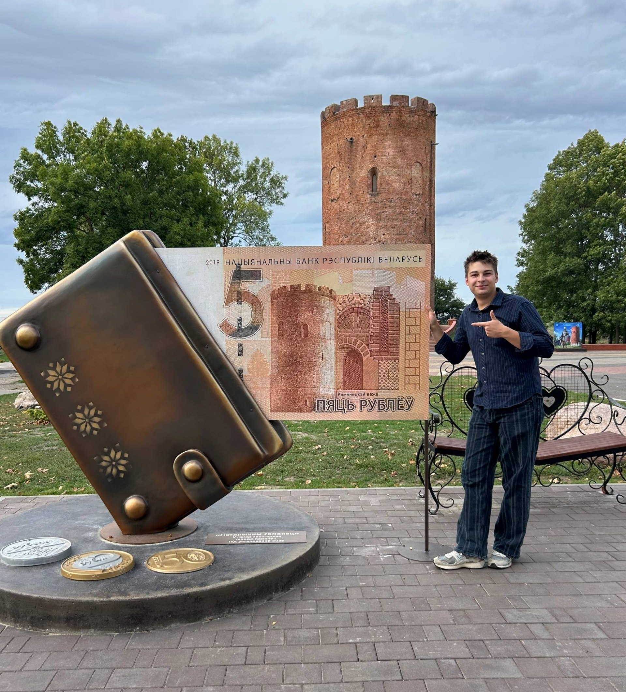

Обо мне

Привет, меня зовут Игорь Скидан, полное имя — Скидан Игорь Николаевич. Мне 19 лет, и я учусь на 3 курсе в Гродненском государственном университете имени Янки Купалы (ГрГУ) на факультете ИИПС (Информационные системы и технологии).
До универа учился в Правомостовской средней школе. Там было много чего интересного, и параллельно я успел окончить художественную школу — рисование со мной ещё с детства.
Кратко обо мне
| Параметр | Значение |
|---|---|
| ФИО | Скидан Игорь Николаевич |
| Возраст | 19 лет |
| Вуз | ГрГУ, 3 курс, ИИПС |
| Школа | Правомостовская СШ |
| Доп. образование | Художественная школа |
Что я умею
- 🎸 Играю на гитаре
- 🎨 Хорошо рисую — окончил художественную школу
- 💻 Учусь на программиста (ИИПС)
- 🧠 Быстро разбираюсь в новом
Мои цели
- Сдать сессию без хвостов
- Прокачать навыки в вебе и программировании
- Продолжать рисовать и играть на гитаре
- Найти нормальную работу по специальности
Подробнее про мою учёбу в ГрГУ можно узнать на официальном сайте университета.